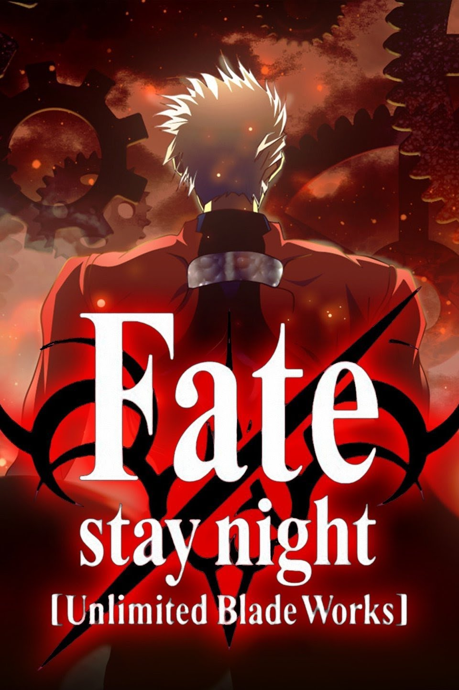

Anilist - Anime Recommendations
1. Bleach
Bleach follows the adventures of high school student Ichigo Kurosaki who inherits his parents' destiny after he obtains the powers of a Soul Reaper - a death personification similar to the Grim Reaper - from another Soul Reaper, Rukia Kuchiki. His new-found powers force him to take on the duties of defending humans from evil spirits and guiding departed souls to the afterlife.
2. Fate/stay night

Fate/stay night follows Shirou Emiya, a high school student and amateur magus living in Fuyuki City, Japan. When a deadly battle royale known as the Fifth Holy Grail War begins, Shirou finds himself entering into a contract with a powerful girl named Saber. Together they must fight against other mages and servants in a battle for the Holy Grail, an omnipotent wish-granting device.
3. JoJo's Bizarre Adventure

JoJo's Bizarre Adventure tells the story of the Joestar family, who are endowed with powerful abilities, and the adventures each member encounters throughout their lives. Each arc focuses on a different protagonist bearing the JoJo nickname and a unique power that manifests as a "Stand" - a supernatural ability unique to each character.
4. Hunter x Hunter

Hunter x Hunter follows Gon Freecss as he strives to become a Hunter in order to find his father, Ging, who is considered one of the greatest Hunters alive. In the process, Gon befriends Killua Zoldyck, Kurapika and Leorio Paradinight, with whom he takes the Hunter Exam. Along the way, Gon and his friends embark on exciting adventures, battle dangerous enemies, and learn more about the secrets of the Hunter world.
5. Jujutsu Kaisen

Jujutsu Kaisen follows high school student Yuuji Itadori as he joins a secret organization of Jujutsu Sorcerers in order to harness a powerful Cursed Energy within him. This allows Yuuji to fight Curses - malevolent spirits that feed on unsuspecting humans. Alongside powerful allies like the skilled sorcerers Megumi Fushiguro and Nobara Kugisaki, Yuuji learns to harness his Cursed Energy and protect the innocent from harm.